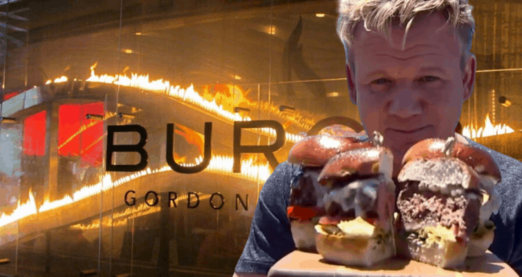

Gordon Ramsey's All American Burger Recipe
Return to Simple-Recipes menu? Click here

Before we start with the process of actually making our delectable burger, we must first actually have our ingredients ready for the burger making process!
You will need:
- A stove
- A pan
- A spoon
- A spatula
- A lid for the pan
- Canola Oil
- butter
- A fresh, raw burger patty
- Salt
- Pepper
- Butter
- Onions
- Cheese
- Burger buns
- Lettuce
- Tomato
- Dijon Mustard (You can just use normal mustard if you don't have Dijon Mustard on hand)
- Pickles
- Mayonnaise
Directions for cooking your burger, meling cheese, and caramelizing your onions:
- Place your pan on your Stove
- Drizzle your pan with Canola oil
- Pick up your pan and move move it around to spread the canola oil throughout the pan
- Once the Canola oil has spread around your pan, place the pan on your stove
- Turn on your stove to about medium-high heat to get your pan nice and warm
- Place your burger patty in the pan, perferabbly at the center of the pan
- Season your burger patty with salt and pepper
- As the burger starts caramelizing, get your butter and cut off about half a table spoon of butter
- Turn down the heat of the stove and use the remaining heat in the pan to continue cooking the burger
- Tip the pan over to get the juices on one side, and use your spoon to scoop up the juices and pour them on the burger to give it more flavor
- Continue cooking the burger for about 2 minutes or until it has a good brownish texture
- Once the burger appears to have a good sear on the bottom flip it over with a spatula and cook the other side for about another 2 minutes or until it has a good sear on the other side
- Add another half a table spoon of butter for more flavor
- Grab your onion and cut off about 3 slices
- Place your slices into the pan to caramelize the onions
- Add pepper onto your patty and onions
- Once the onions appear to be cooked well enough on one side, turn them over
- Grab a slice of cheese
- Season your burger with a bit of salt, then place your cheese on top of your patty
- Grab another slice of cheese
- Season your cheese on your patty with some salt, the place your other slice of cheese on top of the patty with cheese
- Season your patty with double cheese with a bit more salt and pepper
- To melt your cheese quickly grab your pan lid, turn off your heat and place the pan lid on top of your pan
Directions for assembling buger
- Toast your burger buns either by using a toaster or using more butter and another pan to toast the inside of the buns
- Place down your bottom burger bun
- Take out a lettuce, crack it open, and lay it out on your bottom burger bun
- spinkle some salt and pepper on your lettuce
- slice off two slices of tomato
- place your two slices of tomato on your lettuce
- Slice off 4-6 slices of pickles
- Lay your pickles on your tomatoes
- Open up your pan lid, use your spatula to life your burger patty up and place it on your pickles
- Use your spoon to lift your 3 slices of onions up and place on your burger patty
- Add a touch of fresh pepper ontop of your onions
- Grab your top burger bun, spread your dijon mustard on your bun with your spoon
- Place your top burger bun on top of your burger, and crown your king
- Congradulate yourself, as you created a delicious, all-american burger
- Dig in to your prized achievement